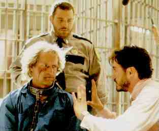

Natural Born Killers B, B+ US/1994/Color/Widescreen 1.85:1/Stereo Surround/118 minutes/Directed by Oliver Stone/Starring Woody Harrelson, Juliette Lewis/Warner/40 Chaps/2 disc/$39.98CLV-CAV/$39.98 I can’t pretend that I looked forward to seeing Natural Born Killers again on disc after the theatrical experience. This is not a film that can be described in conventional terms. Did you like it? Did you enjoy it? Were you moved by it? How did you feel about the characters.? Seeing it for the second time, however, enabled me to pull back from the directoral assault slightly and feel the movie. There can be no doubt that Natural Born Killers  is a visual tour-de-force, a pounding, unrelenting assault on the senses in which images overlap, intersect, explode and expand on to one another. It’s like director Oliver Stone had found sudden inspiration in Jackson Pollack, only he’s using light to paint on the celluloid canvas, a massive canvas stretched to the audience’s breaking point and filled edge to edge by visions of violence distilled through the machinery of pop culture. The power of Stone in Hollywood is awesome given that he was afforded the artistic and financial freedom to make such an audacious, outrageous, and yes, disgusting film. Stone succeeds in numbing his audience, brow beating them into accepting the vision of Hell that is Natural Born Killers.Just as the painter applies his oils in different thicknesses or adds different materials to his composition to create texture and depth, Stone and cinematographer Robert Richardson pile on the images sourced from the endless pockets of a Harpo Marx: black and white, sharply focused, grainy, blurred, washed in tint, pale, over saturated, blooming, glowing, psychedelic, clipped and short, long and slow, videotape and film. Stone does not restrict himself to bold use of image, but sound is overlaid on image in equally brazen measures of rock & roll or Wagnerian strains. Sounds are emphasized in surreal accompaniment to visuals. A cigarette drops on to the concrete floor of a jail cell producing the resonance of two powerful bass thwumps. Just as the mesmerizing combination of non-stop imagery fills the screen, the sounds of Natural Born Killers envelope one into an overbearing three dimensional presence. The linear story of a young couple on a killing spree, tracked and exploited by the media, embraced by the public and finally immortalized in a jail house broadcast interview conducted by the over-the-top host talk show host are simply elements violently mixed together in Stone’s cauldron of hot passion. This is certainly no story of Mickey and Mallory Knox, your next door neighbor serial killers. Just before Mickey kills talk show host Wayne Gale he says "If we let you go we’ll be just like everybody else. Killing you and what you represent is--a statement. I’m not one hundred percent sure exactly what it’s sayin’, but you know, Frankenstein killed Dr. Frankenstein." Is this Mickey or Stone speaking at this point? Natural Born Killers is a statement. I’m not quite sure what it’s saying. The supporting actors are encouraged to let it all hang out in their performances, though Woody Harrelson and Juliet Lewis play it pretty straight. Both are excellent, and in fact, I have never liked the highly praised Lewis in anything before Natural Born Killers. Robert Downey is a wild man as Wayne Gale, America’s most popular talk show host, and Tommy Lee Jones is so hyperbolic as Warden McCluskey, he makes Downey seem like a Tibetan monk. Technically, Natural Born Killers is a stunning achievement. Stone’s direction is totally unrestrained and Richardson gives him every image he can think up. The editing is absolutely superb. If I can muster up the courage to see it again, I might even raise the rating. The disc is very good is replicating the multiple format images that Natural Born Killers utilizes. It is a sharp transfer. The colors are excellent. The visual style of the film came together better on the laser disc than it did in the theater in which I saw it first. The surround sound is powerful with wide separation for effect. This is truly a first class laser disc that I would encourage you to try and sit through. |